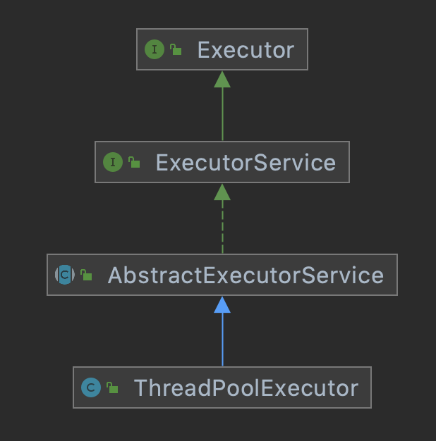
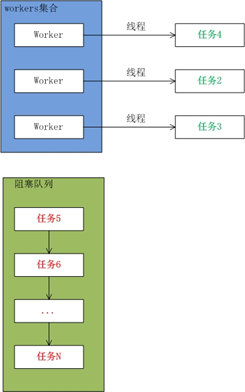

线程池实现原理 #
1 前言 #
1.1 什么是线程池 #
- 线程池（Thread Pool）是一种基于池化思想管理线程的工具，经常出现在多线程服务器中，如 MySQL。
- 线程过多会带来额外的开销，其中包括创建销毁线程的开销、调度线程的开销等等，同时也降低了计算机的整体性能。
- 线程池维护多个线程，等待监督管理者分配可并发执行的任务，这种做法，一方面避免了处理任务时创建销毁线程开销的代价，另一方面避免了线程数量膨胀导致的过分调度问题，保证了对内核的充分利用。
1.2 线程池有哪些优点 #
- 降低资源消耗：通过池化技术重复利用已创建的线程，降低线程创建和销毁造成的损耗。
- 提高响应速度：任务到达时，无需等待线程创建即可立即执行。
- 提高线程的可管理性：线程是稀缺资源，如果无限制的创建，不仅会消耗系统资源，还会因为线程的不合理分布导致资源调度失衡，降低系统的稳定性，使用线程池可以进行统一的分配、调优和监控。
- 提供更多更强大的功能：线程池具备可拓展性，允许开发人员向其中增加更多的功能，比如延时定时线程池
ScheduledThreadPoolExecutor，就允许任务延期执行或定期执行。
1.3 线程池解决的问题是什么 #
- 线程池解决的核心问题就是资源管理问题，在并发环境下，系统不确定在任意时刻中，有多少任务需要执行，有多少资源需要投入，这种不确定性将带来以下若干问题：
- 频繁申请、销毁资源和调度资源，将带来额外的损耗，可能会非常巨大。
- 对资源无限申请缺少抑制手段，易引发系统资源耗尽的风险。
- 系统无法合理管理内部的资源分布，会降低系统的稳定性。
- 为解决资源分配这个问题，线程池采用了池化（Pooling）思想，即为了最大化收益并最小化风险，而将资源统一在一起管理的一种思想。
- 除了线程池以外，池化思想在计算机领域的其他比较典型的几种使用策略包括：
- 内存池（Memory Pooling）：预先申请内存，提升内存申请速度，减少内存碎片。
- 连接池（Connection Pooling）：预先申请数据库连接，提升申请连接的速度，降低系统的开销。
- 实例池（Object Pooling）：循环使用对象，减少资源在初始化和释放时的昂贵损耗。
2 核心设计与实现 #
在前文中，我们了解到线程池是一种通过池化思想，帮助我们管理线程而获取并发性的工具，在 Java 中的体现是 ThreadPoolExecutor，下面我们将详细介绍该类的设计与实现。
如无特殊说明，下面内容的叙述基于的 JDK 版本为 JDK 1.8.0_181。
2.1 总体设计 #
ThreadPoolExecutor 的继承关系如下图所示：

2.1.1 Executor #
- 提供了一种思想，将任务提交和任务执行进行解耦，用户无需关注如何创建线程，如何调度线程来执行任务，只需要提供
Runnable对象，将任务的运行逻辑提交到执行器Executor中，由Executor框架完成线程的调配和任务的执行部分。void execute(Runnable command);
2.1.2 ExecutorService #
-
继承了
Executor，提供了管控线程池的方法，比如shutdown()、submit()，可以说是真正的线程池接口。void shutdown(); /*启动一次有序的关闭，之前提交的任务执行，但不接受新的任务；这个方法不会等待之前提交的任务执行完毕*/ List<Runnable> shutdownNow(); /*试图停止所有正在执行的任务。暂停处理正在等待的任务，返回一个等待执行的任务列表；这个方法不会等待正在执行的任务终止*/ boolean isShutdown(); /*如果已经被 shutdown，返回 true*/ boolean isTerminated(); /*如果所有任务都已经被终止，返回 true*/ boolean awaitTermination(long timeout, TimeUnit unit) /*在一个 shutdown 请求后，阻塞的等待所有任务执行完毕，或者到达超时时间，或者当前线程被中断*/ throws InterruptedException; -
扩充执行任务的能力，补充可以为一个或一批异步任务生成
Future的方法。Future<?> submit(Runnable task); /*提交一个可执行的任务，返回一个 Future 代表这个任务，等到任务成功执行，Future#get() 方法会返回 null*/ <T> Future<T> submit(Runnable task, T result); /*提交一个可执行的任务，返回一个 Future 代表这个任务，等到任务成功执行，Future#get() 方法会返回这个给定的 result*/ <T> Future<T> submit(Callable<T> task); /*提交一个有返回值的任务，并返回一个 Future 代表等待的任务执行的结果，等到任务成功执行，Future#get() 方法会返回任务执行的结果*/
2.1.3 AbstractExecutorService #
- 是上层的抽象类，将执行任务的流程串联了起来，保证下层的实现只需关注一个执行任务的方法即可。
public Future<?> submit(Runnable task) { /*提交一个可执行的任务，返回一个 Future 代表这个任务，等到任务成功执行，Future#get() 方法会返回 null*/ if (task == null) throw new NullPointerException(); RunnableFuture<Void> ftask = newTaskFor(task, null); execute(ftask); return ftask; } public <T> Future<T> submit(Runnable task, T result) { /*提交一个可执行的任务，返回一个 Future 代表这个任务，等到任务成功执行，Future#get() 方法会返回这个给定的 result*/ if (task == null) throw new NullPointerException(); RunnableFuture<T> ftask = newTaskFor(task, result); execute(ftask); return ftask; } public <T> Future<T> submit(Callable<T> task) { /*提交一个有返回值的任务，并返回一个 Future 代表等待的任务执行的结果，等到任务成功执行，Future#get() 方法会返回任务执行的结果*/ if (task == null) throw new NullPointerException(); RunnableFuture<T> ftask = newTaskFor(task); execute(ftask); return ftask; }
2.1.4 ThreadPoolExecutor #
2.1.4.1 含义 #
-
实现最复杂的运行部分，一方面维护自己的生命周期，另一方面同时管理线程和任务，使两者良好的结合从而执行并行任务，是线程池的具体实现。
-
ThreadPoolExecutor的运行机制如下图所示：
- 线程池内部实际上构建了一个生产者消费者模型，将线程和任务两者解耦，并不直接关联，从而良好的缓冲任务，复用线程。
- 线程池的运行主要分成两部分，分别是任务管理、线程管理：
- 任务管理部分充当生产者的角色，当任务提交后，线程池会判断该任务后续的流转：
- 直接申请线程执行该任务。
- 缓冲到队列中等待线程执行。
- 拒绝该任务。
- 线程管理部分是消费者，他们被统一维护在线程池内，根据任务请求进行线程的分配，当线程执行完任务后则会继续获取新的任务去执行，最终当线程获取不到任务的时候，线程就会被回收。
- 任务管理部分充当生产者的角色，当任务提交后，线程池会判断该任务后续的流转：
2.1.4.2 构造函数 #
-
ThreadPoolExecutor 的构造函数如下：
public ThreadPoolExecutor(int corePoolSize, int maximumPoolSize, long keepAliveTime, TimeUnit unit, BlockingQueue<Runnable> workQueue, ThreadFactory threadFactory, RejectedExecutionHandler handler)-
corePoolSize：- 线程池的核心线程数，当提交一个任务时，线程池创建一个新线程执行任务，直到线程数等于
corePoolSize，然后继续提交的任务会被保存到阻塞队列中，等待被执行。 - 如果执行了线程池的
prestartAllCoreThreads()方法，线程池会提前创建并启动所有核心线程。
- 线程池的核心线程数，当提交一个任务时，线程池创建一个新线程执行任务，直到线程数等于
-
maximumPoolSize：- 线程池中允许的最大线程数，如果当前阻塞队列满了，且继续提交任务，则创建新的线程执行任务，前提是当前线程数小于
maximumPoolSize。
- 线程池中允许的最大线程数，如果当前阻塞队列满了，且继续提交任务，则创建新的线程执行任务，前提是当前线程数小于
-
keepAliveTime：- 线程空闲时的存活时间，即当线程没有任务执行时，继续存活的时间。
- 默认情况下，该参数只在线程数大于
corePoolSize时才有用。
-
workQueue：workQueue必须是BlockingQueue阻塞队列。- 当线程池中的线程数超过他的
corePoolSize的时候，线程会进入阻塞队列进行阻塞等待。 - 通过
workQueue，线程池实现了阻塞功能。 - 几种典型的阻塞队列及用法如下所示：
-
ArrayBlockingQueue：
- 一个数组实现的有界队列，按照先进先出（FIFO）的原则对元素进行排序，支持公平锁和非公平锁。
-
LinkedBlockingQueue：
- 一个由链表结构组成的有界队列，按照先进先出（FIFO）的原则对元素进行排序。
- 此队列的默认长度为
Integer.MAX_VALUE，所以默认创建的该队列有容量危险。
-
PriorityBlockingQueue：
- 一个支持线程优先级排序的无界队列，默认自然序进行排序，也可以自定义实现
compareTo()方法来指定元素排序规则，不能保证同优先级元素的顺序。
- 一个支持线程优先级排序的无界队列，默认自然序进行排序，也可以自定义实现
-
DelayQueue：
- 一个实现
PriorityBlockingQueue实现延迟获取的无界队列，在创建元素时，可以指定多久才能从队列中获取当前元素，只有延时期满后才能从队列中获取元素。
- 一个实现
-
SynchronousQueue：
- 一个不存储元素的阻塞队列，每一个
put操作必须等待take操作，否则不能添加元素。 - 支持公平锁和非公平锁。
SynchronousQueue的一个使用场景是在线程池里，Executors.newCachedThreadPool()就使用了SynchronousQueue，这个线程池根据需要（新任务到来时）创建新的线程，如果有空闲线程则会重复使用，线程空闲了 60 秒后会被回收。
- 一个不存储元素的阻塞队列，每一个
-
LinkedTransferQueue：
- 一个由链表结构组成的无界队列，相比于其他队列，
LinkedTransferQueue队列多了transfer和tryTransfer方法。
- 一个由链表结构组成的无界队列，相比于其他队列，
-
LinkedBlockingDeque：
- 一个由链表结构组成的双向队列，队列头部和尾部都可以添加和移除元素，多线程并发时，可以将锁的竞争最多降到一半。
-
-
threadFactory：-
创建线程的工厂，通过自定义的线程工厂可以给每个新建的线程设置一个具有识别度的线程名。
-
Executors静态工厂里默认的threadFactory，线程的命名规则是pool-数字-thread-数字：static class DefaultThreadFactory implements ThreadFactory { private static final AtomicInteger poolNumber = new AtomicInteger(1); private final ThreadGroup group; private final AtomicInteger threadNumber = new AtomicInteger(1); private final String namePrefix; DefaultThreadFactory() { SecurityManager s = System.getSecurityManager(); group = (s != null) ? s.getThreadGroup() : Thread.currentThread().getThreadGroup(); namePrefix = "pool-" + poolNumber.getAndIncrement() + "-thread-"; } public Thread newThread(Runnable r) { Thread t = new Thread(group, r, namePrefix + threadNumber.getAndIncrement(), 0); if (t.isDaemon()) t.setDaemon(false); if (t.getPriority() != Thread.NORM_PRIORITY) t.setPriority(Thread.NORM_PRIORITY); return t; } } -
Executors静态工厂创建的几种常用的线程池如下：newFixedThreadPool：-
创建一个指定工作线程数的线程池，其中参数
corePoolSize和maximumPoolSize相等，阻塞队列基于LinkedBlockingQueue。 -
他是一个典型且优秀的线程池，具有提高线程池执行效率和节省创建线程所耗开销的优点，但是在线程池空闲时，即线程池中没有可运行任务时，他也不会释放工作线程，还会占用一定的资源。
public static ExecutorService newFixedThreadPool(int nThreads) { return new ThreadPoolExecutor(nThreads, nThreads, 0L, TimeUnit.MILLISECONDS, new LinkedBlockingQueue<Runnable>()); } public static ExecutorService newFixedThreadPool(int nThreads, ThreadFactory threadFactory) { return new ThreadPoolExecutor(nThreads, nThreads, 0L, TimeUnit.MILLISECONDS, new LinkedBlockingQueue<Runnable>(), threadFactory); }
-
newSingleThreadExecutor：-
初始化的线程只有一个线程，如果该线程异常结束，会重新创建一个新的线程继续执行任务。
-
唯一的线程可以保证所提交任务的顺序执行，内部使用
LinkedBlockingQueue作为阻塞队列。public static ExecutorService newSingleThreadExecutor() { return new FinalizableDelegatedExecutorService (new ThreadPoolExecutor(1, 1, 0L, TimeUnit.MILLISECONDS, new LinkedBlockingQueue<Runnable>())); } public static ExecutorService newSingleThreadExecutor(ThreadFactory threadFactory) { return new FinalizableDelegatedExecutorService (new ThreadPoolExecutor(1, 1, 0L, TimeUnit.MILLISECONDS, new LinkedBlockingQueue<Runnable>(), threadFactory)); }
-
newCachedThreadPool：-
创建一个可缓存工作线程的线程池，默认存活时间60秒。
-
线程池的线程数可达到
Integer.MAX_VALUE，内部使用SynchronousQueue作为阻塞队列。 -
在没有任务执行时，当线程的空闲时间超过
keepAliveTime，则工作线程会停止，当提交新任务时，如果没有空闲线程，则创建新线程执行任务，会导致一定的系统开销。public static ExecutorService newCachedThreadPool() { return new ThreadPoolExecutor(0, Integer.MAX_VALUE, 60L, TimeUnit.SECONDS, new SynchronousQueue<Runnable>()); } public static ExecutorService newCachedThreadPool(ThreadFactory threadFactory) { return new ThreadPoolExecutor(0, Integer.MAX_VALUE, 60L, TimeUnit.SECONDS, new SynchronousQueue<Runnable>(), threadFactory); }
-
newScheduledThreadPool：-
初始化的线程池可以在指定的时间内周期性的执行所提交的任务，在实际的应用场景中可以使用该线程池定期的同步数据。
public static ScheduledExecutorService newScheduledThreadPool(int corePoolSize) { return new ScheduledThreadPoolExecutor(corePoolSize); } public static ScheduledExecutorService newScheduledThreadPool( int corePoolSize, ThreadFactory threadFactory) { return new ScheduledThreadPoolExecutor(corePoolSize, threadFactory); } -
ScheduledExecutorService中的定式策略有两种：scheduleAtFixedRate：-
指的是以固定的频率执行，
period指的是两次成功执行之间的时间。 -
比如
scheduleAtFixedRate(command, 5, 2, second)，第一次开始执行是5s后，假如执行耗时1s，那么下次开始执行是7s后，再下次开始执行是9s后。public ScheduledFuture<?> scheduleAtFixedRate(Runnable command, long initialDelay, long period, TimeUnit unit);
-
scheduleWithFixedDelay：- 指的是以固定的延时执行，
delay指的是一次执行终止和下一次执行开始之间的延迟。 - 还是上例，
scheduleAtFixedRate(command, 5, 2, second)，第一次开始执行是5s后，假如执行耗时1s，执行完成时间是6s后，那么下次开始执行是8s后，再下次开始执行是11s后。public ScheduledFuture<?> scheduleWithFixedDelay(Runnable command, long initialDelay, long delay, TimeUnit unit);
- 指的是以固定的延时执行，
-
-
-
RejectedExecutionHandler：- 线程池的拒绝策略，当阻塞队列满了，且没有空闲的工作线程，如果继续提交任务，必须采取一种策略处理该任务。
- 线程池提供了 4 种拒绝策略：
- AbortPolicy：
- 丢弃任务并抛出
RejectedExecutionException，这是线程池默认的拒绝策略，在任务不能再提交的时候，抛出异常，及时反馈程序运行状态。 - 如果是比较关键的业务，推荐使用此拒绝策略，这样在系统不能承载更大的并发量的时候，能够及时的通过异常发现。
- 丢弃任务并抛出
- DiscardPolicy：
- 丢弃任务，但是不抛出异常。
- 使用此策略，可能会使我们无法发现系统的异常状态，建议是一些无关紧要的业务采用此策略。
- DiscardOldestPolicy：
- 丢弃队列最前面的任务，然后重新提交被拒绝的任务。
- 是否要采用此种策略，还得根绝实际业务是否允许丢弃老任务来认真衡量。
- CallerRunsPolicy：
- 由调用线程（提交任务的线程）处理该任务。
- 这种情况是需要让所有任务都执行完毕，比较适合大量计算的任务类型去执行，多线程仅仅是增大吞吐量的手段，最终必须要让每个任务都执行完毕。
- AbortPolicy：
-
2.2 生命周期管理 #
-
线程池的运行状态，并不是用户显示设置的，而是伴随着线程池的运行，由内部来维护，线程池内部使用一个变量维护两个值，分别为运行状态（
runState）和线程池数量（workerCount），具体代码如下所示：private final AtomicInteger ctl = new AtomicInteger(ctlOf(RUNNING, 0)); private static final int COUNT_BITS = Integer.SIZE - 3; /*Integer.SIZE = 32;*/ private static final int CAPACITY = (1 << COUNT_BITS) - 1; // runState is stored in the high-order bits private static final int RUNNING = -1 << COUNT_BITS; private static final int SHUTDOWN = 0 << COUNT_BITS; private static final int STOP = 1 << COUNT_BITS; private static final int TIDYING = 2 << COUNT_BITS; private static final int TERMINATED = 3 << COUNT_BITS; // Packing and unpacking ctl private static int runStateOf(int c) { return c & ~CAPACITY; } private static int workerCountOf(int c) { return c & CAPACITY; } private static int ctlOf(int rs, int wc) { return rs | wc; } /*rs：runState，运行状态 wc：wordCount，线程池数量*/ctl这个AtomInteger类型，是对线程池的运行状态和有效线程数量进行控制的一个字段，他同时包含两部分信息，分别是线程池的运行状态和线程池内有效线程的数量，其中，高 3 位用于维护线程池运行状态，低 29 位用于维护线程池中线程数量，两个变量之间互不干扰。- 用一个变量去存储两个值，可以避免在做相关决策时出现不一致的情况，不必为了维护两者的一致而占用锁资源。
- 通过阅读线程池源代码也可以发现，经常出现需要同时判断线程池运行状态和线程数量的情况，线程池也提供了若干方法去供用户获得线程池当前的运行状态、线程个数，这里使用的都是位运算的方式，相比于基本运算，速度也会快很多。
-
ThreadPoolExecutor的运行状态有 5 种，具体如下所示：- RUNNING：能接受新提交的任务，并且也能处理阻塞队列中的任务。
- SHUTDOWN：不再接受新提交的任务，但却可以继续处理阻塞队列中已保存的任务。
- STOP：不能接受新任务，也不处理队列中的任务，会中断正在处理任务的线程。
- TIDYING：所有的任务都已终止了，
workCount（有效线程数）为 0。 - TERMINATED：在
terminated()方法执行完后进入该状态。
其生命周期转换如下图所示：

2.3 任务执行机制 #
2.3.1 任务调度 #
任务调度是线程池的主要入口，当用户提交了一个任务，接下来这个任务将如何执行都是由这个阶段决定的，了解这部分就相当于了解了线程池的核心运行机制。
- 首先，所有任务的调度都是由
execute()方法完成的，这部分完成的工作是检查线程池的运行状态、运行线程数、运行策略，决定接下来执行的流程，是直接申请线程执行，或是缓冲到队列中执行，亦或是直接拒绝该任务。 - 当试图通过
execute()方法将一个Runnable任务添加到线程池中时，按照如下顺序来处理：-
首先检测线程池运行状态，如果不是
RUNNING，则直接拒绝，线程池要保证在RUNNING的状态下执行任务。 -
然后检查运行线程数，决定接下来执行的流程：
- 如果线程池中的线程数量少于
corePoolSize，就创建新的线程来执行新添加的任务。 - 如果线程池中的线程数量大于等于
corePoolSize，但队列workQueue未满，则将新添加的任务放到workQueue中，按照 FIFO 的原则依次等待执行（线程池中有线程空闲出来后依次将队列中的任务交付给空闲的线程执行）。 - 如果线程池中的线程数量大于等于
corePoolSize，且队列workQueue已满，但线程池中的线程数量小于maximumPoolSize，则会创建新的线程来处理被添加的任务。 - 如果线程池中的线程数量等于了
maximumPoolSize，就用RejectedExecutionHandler来做拒绝处理。


针对上面最后两张图的说明：
- 在第二张图中，线程池中有 $N$ 个任务，任务 1、任务 2、任务 3 这三个任务在执行，而任务 4 到任务 $N$ 在阻塞队列中等待，在执行任务的
Workers集合中，包含 3 个Worker，每一个Worker对应一个Thread线程，Thread线程每次处理一个任务。 - 当
Worker集合中处理完某一个任务之后，会从阻塞队列中取出一个任务来继续执行，如第三张图所示，第三张图表示任务 1 处理完毕之后，线程池将任务 4 从阻塞队列中取出，放到Workers中进行处理。
- 如果线程池中的线程数量少于
-
2.3.2 任务缓冲 #
- 任务缓冲模块是线程池能够管理任务的核心部分，线程池的本质是对任务和线程的管理，而做到这一点的关键的思想就是将任务和线程两者解耦，不让两者直接关联，才可以做后续的分配工作。
- 线程池中是以生产者消费者模式，通过一个阻塞队列来实现的，阻塞队列缓存任务，工作线程从阻塞队列中获取任务。
- 阻塞队列是一个支持两个附加操作的队列，这两个附加的操作是：
- 在队列为空时，获取元素的线程会等待队列变为非空。
- 当队列满时，存储元素的线程会等待队列可用。
- 阻塞队列常用于生产者和消费者的场景，生产者是往队列里添加元素的线程，消费者是从队列里拿元素的线程，阻塞队列就是生产者存放元素的容器，而消费者也只是从容器里拿元素，如下图所示：

- 使用不同的队列可以实现不一样的任务存取策略，几种典型的阻塞队列及用法详见 2.1.4.2 构造函数。
2.3.3 任务申请 #
- 由上文的任务分配部分可知，任务的执行有两种可能：
- 任务直接由新创建的线程执行，这种情况仅出现在线程初始创建的时候。
- 线程从任务队列中获取任务然后执行，执行完任务的空闲线程会再次去从队列中申请任务再去执行，这种情况出现在线程获取任务的绝大多数情况。
- 线程需要从任务缓存模块中不断地取任务执行，帮助线程从阻塞队列中获取任务，实现线程管理模块和任务管理模块之间的通信，这部分策略由
getTask方法实现，其执行流程如下图所示：
getTask()这部分进行了多次判断，为的是控制线程的数量，使其符合线程池的状态，如果线程池现在不应该持有那么多线程，则会返回null，工作线程Workder会不断接收新任务去执行，而当工作线程Worker接收不到任务的时候，就会开始被回收。
2.3.4 任务拒绝 #
- 任务拒绝模块是线程池的保护部分，线程池有一个最大的容量，当线程池的任务缓存队列已满，并且线程池中的线程数目达到
maximumPoolSize时，就需要拒绝掉该服务，采取任务拒绝策略，保护线程池。 - 拒绝策略是一个接口，用户可以通过实现这个接口去定制拒绝策略，也可以选择 JDK 提供的四种已有拒绝策略，详见 2.1.4.2 构造函数。
2.3.5 Worker 线程管理 #
2.3.5.1 Worker 线程 #
-
线程池为了掌握线程的状态并维护线程的生命周期，设计了线程池内的工作线程 Worker，部分代码如下：
private final class Worker extends AbstractQueuedSynchronizer implements Runnable { final Thread thread; /*Worker 持有的线程*/ Runnable firstTask; /*初始化的任务，可以为 null*/ } -
Worker 这个工作线程，实现了
Runnable接口，并持有一个线程thread，一个初始化的任务firstTask：thread：在调用构造方法时通过ThreadFactory来创建，可以用来执行任务。firstTask：用来保存传入的第一个任务，这个任务可以有也可以为null，如果这个值是非空的，那么线程就会在启动初期立即执行这个任务，也就对应核心线程创建时的情况，如果这个值是null，那么就需要创建一个线程去执行任务列表（workQueue）中的任务，也就是非核心线程的创建。

-
线程池需要管理线程的生命周期，在线程长时间不运行时需要对其进行回收，线程池使用一张 Hash 表去持有线程的引用，这样可以通过添加引用、移除引用这样的操作来控制线程的生命周期，这个时候重要的就是如何判断线程是否在运行。
-
Worker 是通过继承 AQS，使用 AQS 来实现独占锁这个功能，通过实现不可重入的特性去反映线程现在的执行状态：
lock方法一旦获取了独占锁，表示当前线程正在执行任务中，此时不应该中断线程。- 如果线程现在不是独占锁的状态，也就是空闲的状态，说明他没有在处理任务，这时可以对该线程进行中断。
- 线程池在执行
shutdown()方法或tryTerminate()方法时会调用interruptIdleWorkers()方法来中断空闲的线程，interruptIdleWorkers()方法会使用tryLock()方法来判断线程池中的线程是否是空闲状态，如果线程是空闲状态，则可以安全回收。
2.3.5.2 Worker 线程增加 #
- 增加线程是通过线程池中的
addWorker()方法，该方法的功能就是增加一个线程，不考虑线程池是在哪个阶段增加的该线程，这个分配线程的策略是在上个步骤完成的，该步骤仅仅是完成增加线程，并使他运行，最后返回是否成功这个结果。 addWorker()方法有两个参数，分别是firstTask、core：firstTask：指定新增的线程执行的第一个任务，该参数可以为空。core：该参数为true，表示在新增线程时会判断当前活动线程数是否少于corePoolSize，false表示在新增线程时会判断当前活动线程数是否少于maximumPoolSize。
addWorker()方法的执行流程如下图所示：
2.3.5.3 Worker 线程回收 #
-
线程池中线程的销毁依赖 JVM 的自动回收，线程池做的工作是根据当前线程池的状态维护一定数量的线程引用，防止这部分线程被 JVM 回收，当线程池决定哪些线程需要回收时，只需要将其引用消除即可。
-
Worker 被创建出来以后，就会不断地进行轮询，然后获取任务去执行，核心线程可以无限等待获取任务，非核心线程要限时获取任务，当 Worker 无法获取到任务，也就是获取的任务为空时，循环会结束，Worker 会主动消除自身在线程池内的引用。
try { while (task != null || (task = getTask()) != null) { //执行任务 } } finally { processWorkerExit(w, completedAbruptly);//获取不到任务时，主动回收自己 }
需要注意的是：
- 线程回收的工作是在
processWorkerExit()方法中完成的，在这个方法中，将线程引用移除线程池就已经结束了线程销毁的部分，但是由于引起线程销毁的可能性有很多，因此线程池还要判断是什么引发了这次销毁，是否要改变线程池的现阶段状态，是否要根据新状态重新分配线程。
- 线程回收的工作是在
2.3.5.4 Worker 线程执行任务 #
- 在 Worker 类中的
run()方法调用了runWorker()方法来执行任务，其执行过程如下：-
while循环不断地通过getTask()方法获取任务。 -
getTask()方法从阻塞队列中获取任务：- 如果获取到任务：
- 如果线程池正在停止，那么要保证当前线程是中断状态，否则要保证当前线程不是中断状态。
- 执行任务。
- 如果没有获取到任务，执行
processWorkerExit()方法，销毁线程。

- 如果获取到任务：
-